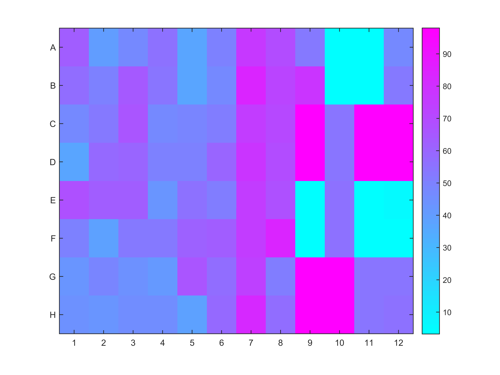
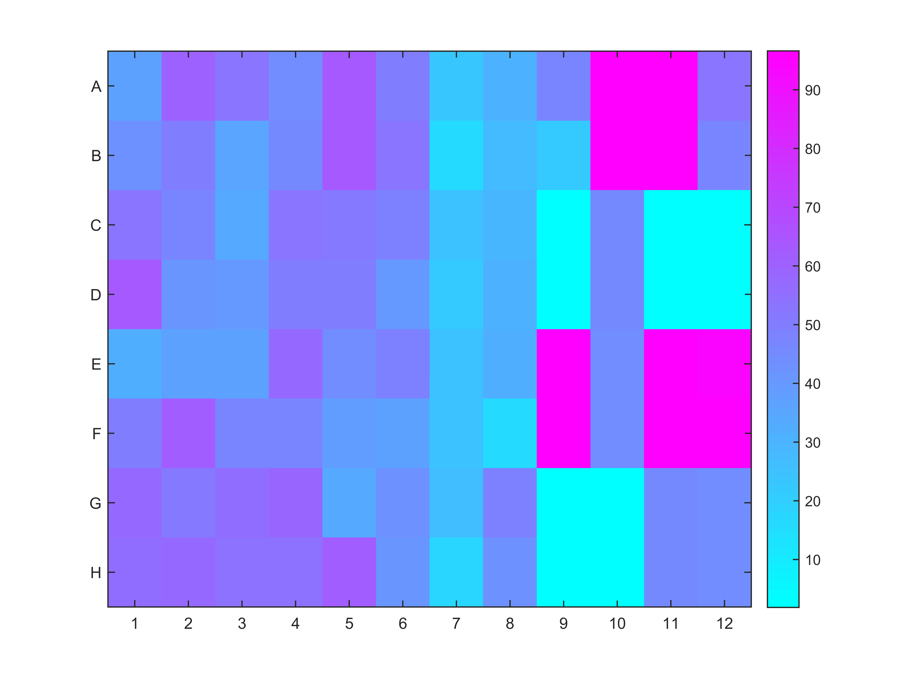
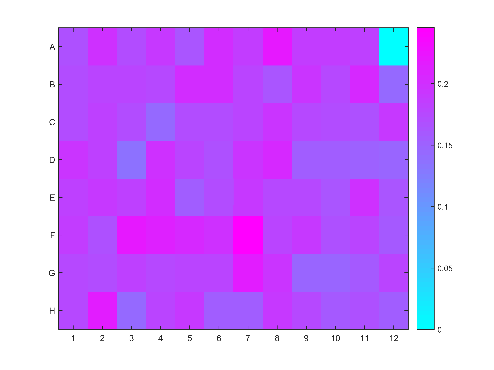
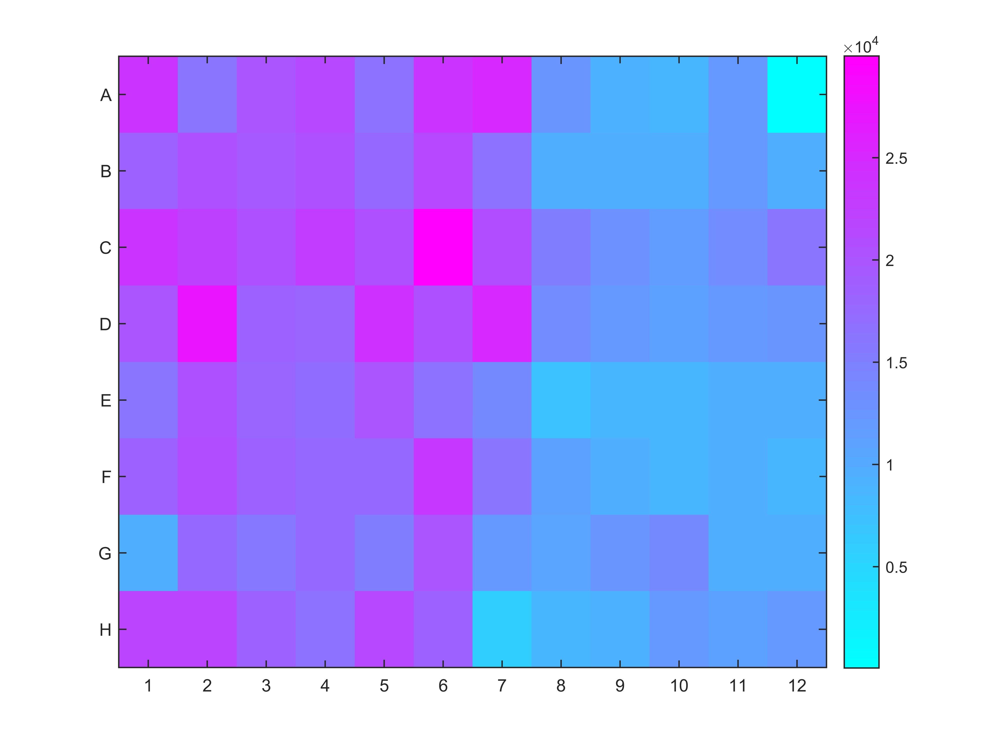

Wicked Cool Report
Summary Metrics:
| % Neither | |
| % Variant Strain A | |
| % Variant Strain B | |
| N Reads Evaluated | |
Sample layout:
Plate:1
| - |
1 |
2 |
3 |
4 |
5 |
6 |
7 |
8 |
9 |
10 |
11 |
12 |
|---|
| A |
1 |
9 |
17 |
25 |
33 |
41 |
49 |
57 |
65 |
73 |
81 |
89 |
|---|
| B |
2 |
10 |
18 |
26 |
34 |
42 |
50 |
58 |
66 |
74 |
82 |
90 |
|---|
| C |
3 |
11 |
19 |
27 |
35 |
43 |
51 |
59 |
67 |
75 |
83 |
91 |
|---|
| D |
4 |
12 |
20 |
28 |
36 |
44 |
52 |
60 |
68 |
76 |
84 |
92 |
|---|
| E |
5 |
13 |
21 |
29 |
37 |
45 |
53 |
61 |
69 |
77 |
85 |
93 |
|---|
| F |
6 |
14 |
22 |
30 |
38 |
46 |
54 |
62 |
70 |
78 |
86 |
94 |
|---|
| G |
7 |
15 |
23 |
31 |
39 |
47 |
55 |
63 |
71 |
79 |
87 |
95 |
|---|
| H |
8 |
16 |
24 |
32 |
40 |
48 |
56 |
64 |
72 |
80 |
88 |
96 |
|---|
% Variant Strain A
Plate:1

% Variant Strain B
Plate:1

% Neither
Plate:1

N Reads Evaluated
Plate:1

Report designed with assistance from the bam.iobio team.
End Of Report